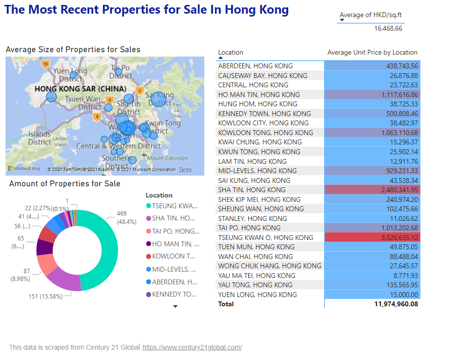

Hong Kong Property Price
Data is scraped from Century 21 Global.
Project Overview
Data from a property website has been analysed.
This project is divided into four steps:
- Data is scrapped by using beautiful soup and saved as an excel file
- Formatting the data by using VBA – unwanted units are moved and data types are amended
- Cleaning and Visualising data on Jupyter
There are some inconsistent fields in the location column and this is identified by using fuzzywuzzy.
- Finally, a dashboard is built on Power BI
Data Description
The data is Scrapped with Beautiful Soup
The formatted data is including:
- property.csv
- Size(sq.ft)
- Size(m2)
- Location
- Price(HKD)
- Price(USD)
- HKD/sq.ft
Technical Overview
This project has been divided into various steps which include:
- Data Scrapping
- Data Formatting with VBA
- Data Cleaning and Data Exploration with Jupyter
- Data Visualisation with Power BI (Creating Dashboard)
Dashboard
